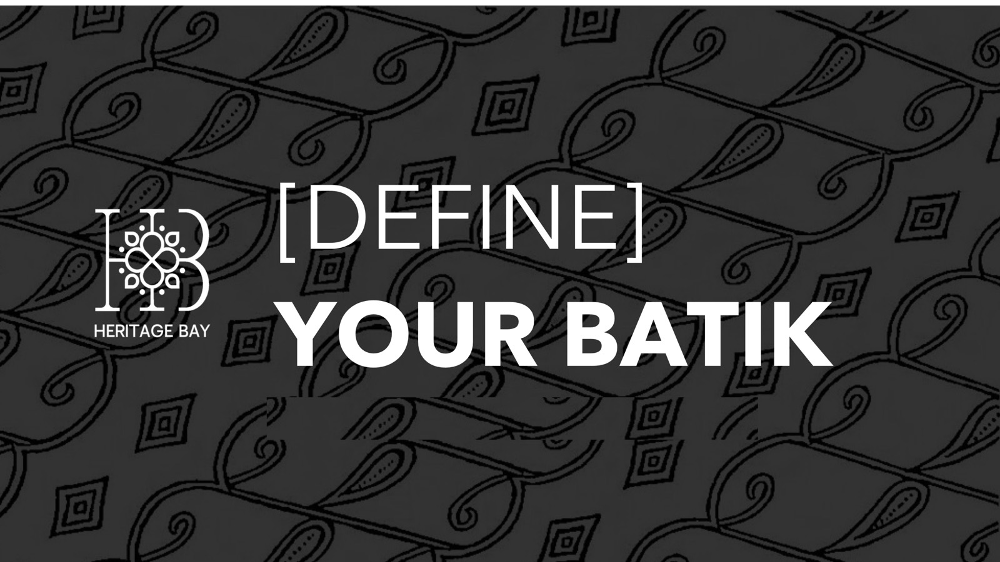

The challenge
Customers felt little emotional appeal or personal connection when choosing Heritage Bay products.
The team traced this to three gaps: limited cultural engagement, a lack of styling knowledge, and weak community loyalty.
A pop-up of themed booths that helps young customers find their own reason to choose Heritage Bay — through heritage, customisation, styling or community.

From the gap they found to the experience they proposed.
Customers felt little emotional appeal or personal connection when choosing Heritage Bay products.
The team traced this to three gaps: limited cultural engagement, a lack of styling knowledge, and weak community loyalty.
[Define] Your Batik guides visitors through a sequence of booths. [Behind] explains batik motifs and the craft process on an iMac beside physical samples. [Design] lets visitors colour a batik motif, upload it and preview it on real products, with a live community gallery.
[Wear] offers an AI styling kiosk next to a clothing rack, and [Own] closes with the Heritage Bay membership app: loyalty points, a community feed and Trace your Craft.
The experience, step by step.
Select a slide to enlarge it. The full deck is under Files.
The team’s Figma file, with the screens and interactions behind the experience. It opens in Figma in a new tab; you may need to sign in to view it.
Open in FigmaGroup member names have been removed.
Examples are references, not templates or model answers. Summaries are drafted from the team’s presentation.